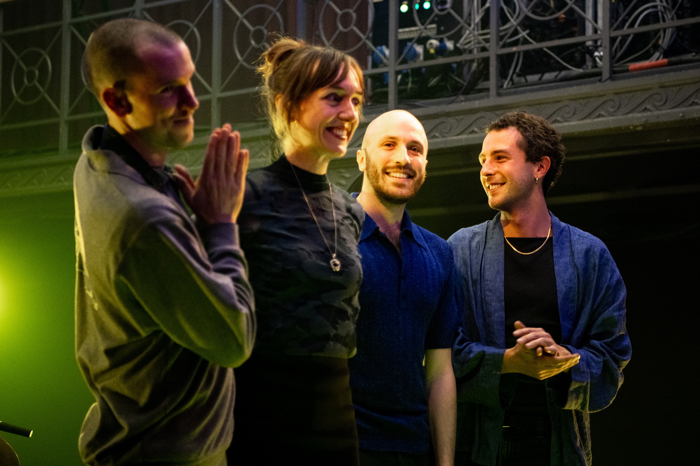
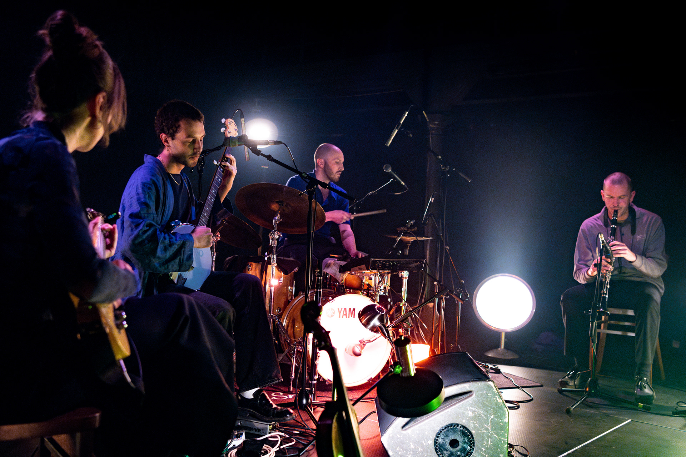
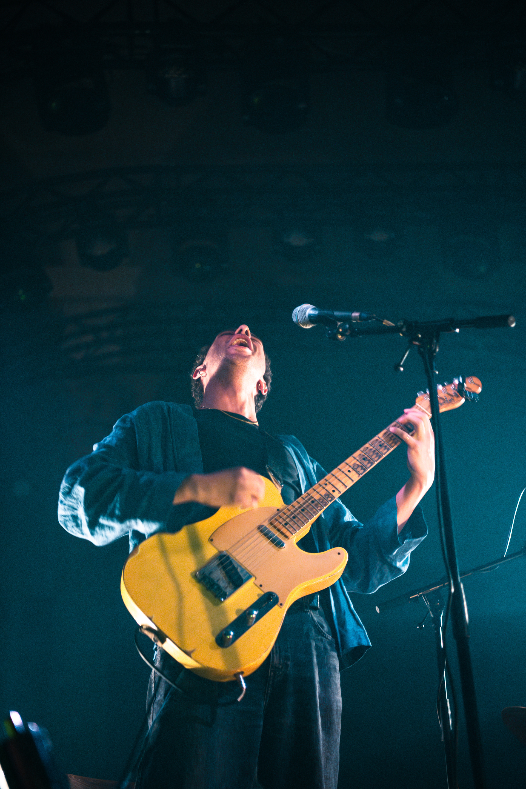
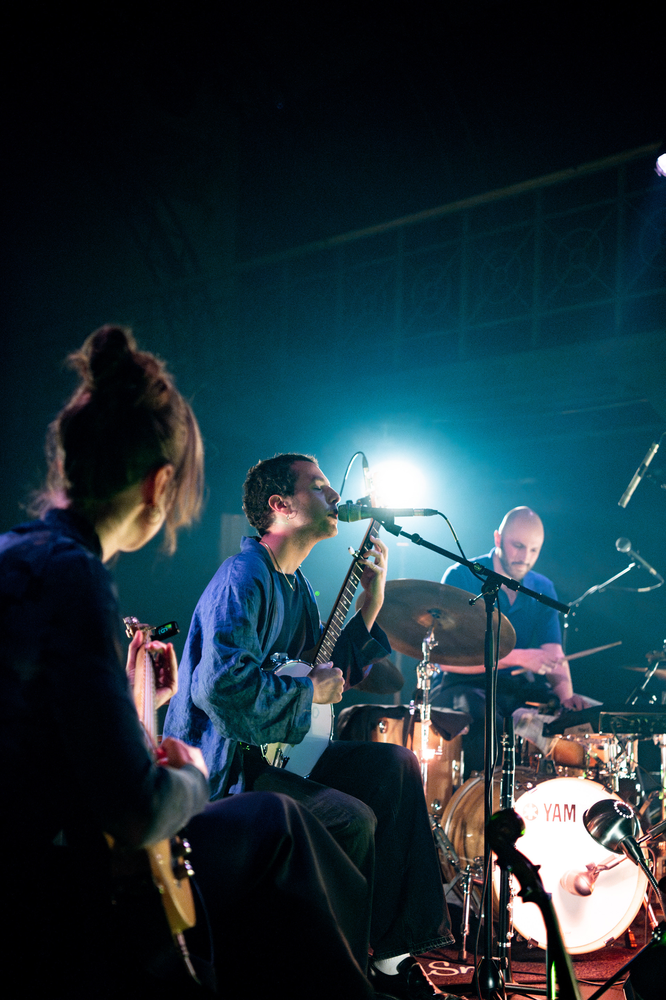
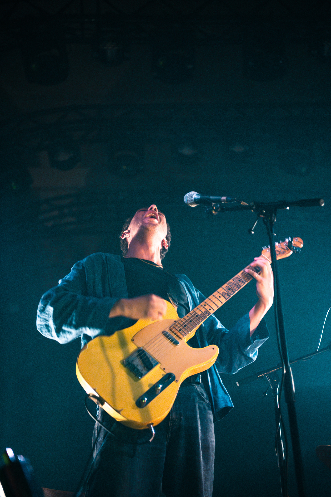
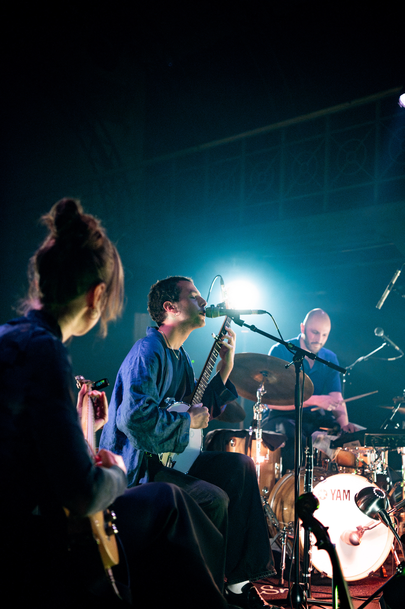
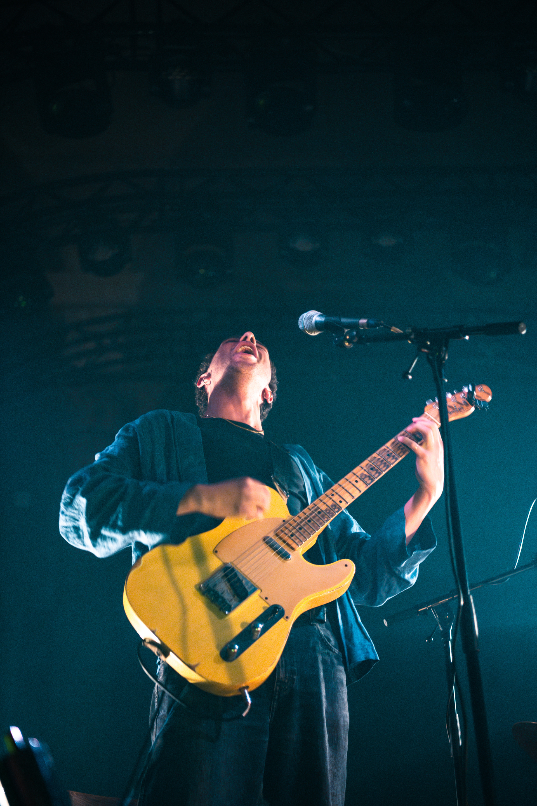
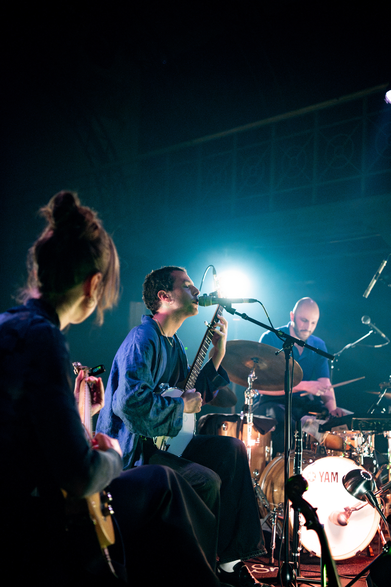

Abel Ghekiere


 





Abel Ghekiere is een Belgische multi instrumentalist met een sound die voortkomt uit minimalistische jazz, traditionele folk en field recordings. Op zijn debuutalbum – Voor het verdwijnt, en daarna – klonken de sporen van verdriet en verlies, een album dat meewiegt en troost. In zijn nieuwe muziek speelt hij met meer openheid, zachtheid en euforie. De inspiratie voor de intuitieve, gestripte vorm van songwriting komt van o.a. Nils Økland, Sufjan Stevens en Caroline. Abel is gitarist van opleiding maar neemt klarinet en banjo mee in de studio en op het podium. Zijn nieuwe album, ‘In de verte, dit uitzicht’ verschijnt in februari 2025 op vinyl bij Rotkat records. Live speelt hij in quartet met Tobias Vockaert (sax), Orlan Ghekiere (drum) en Hendrike Scharmann (viool).
← Terug naar projecten